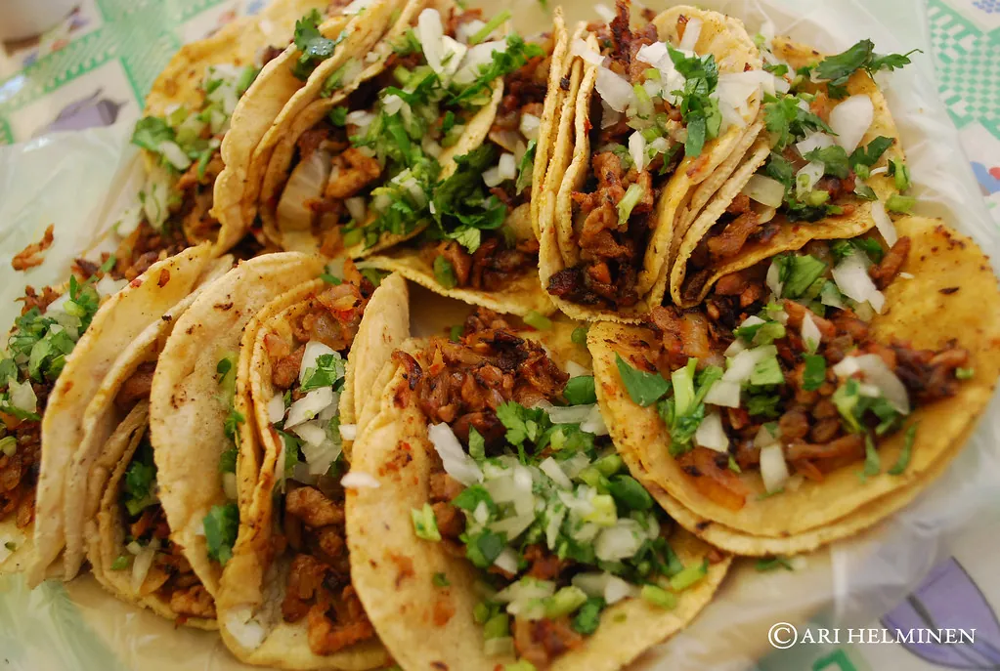
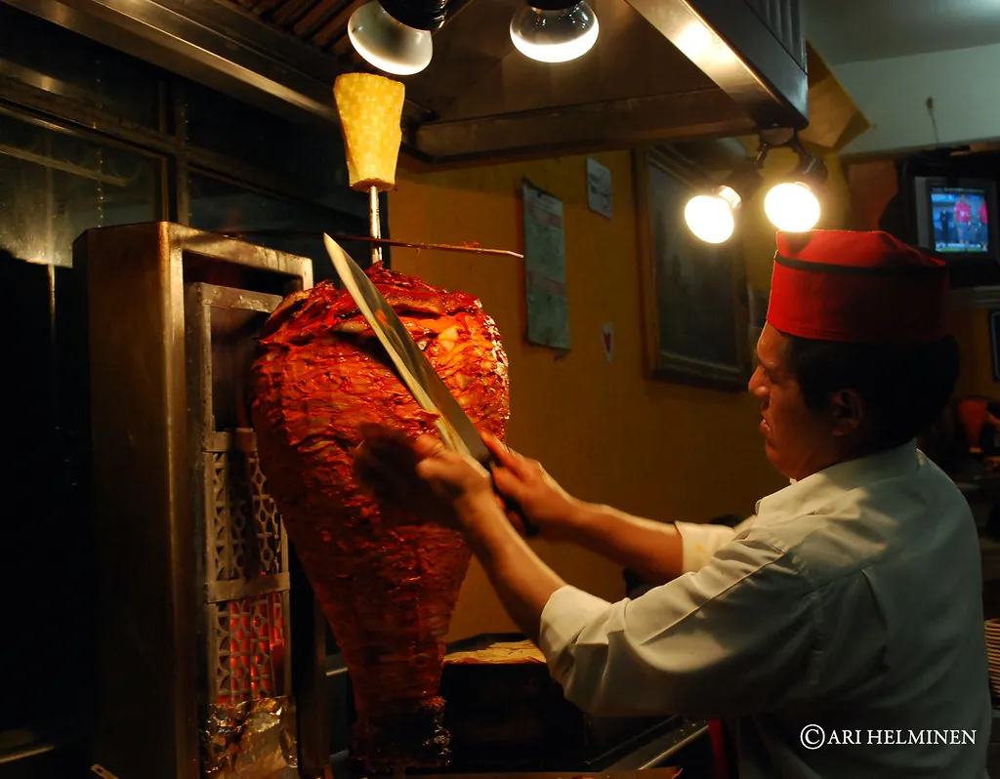
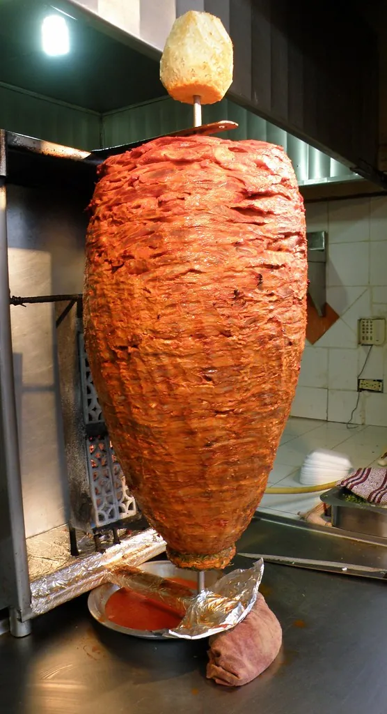
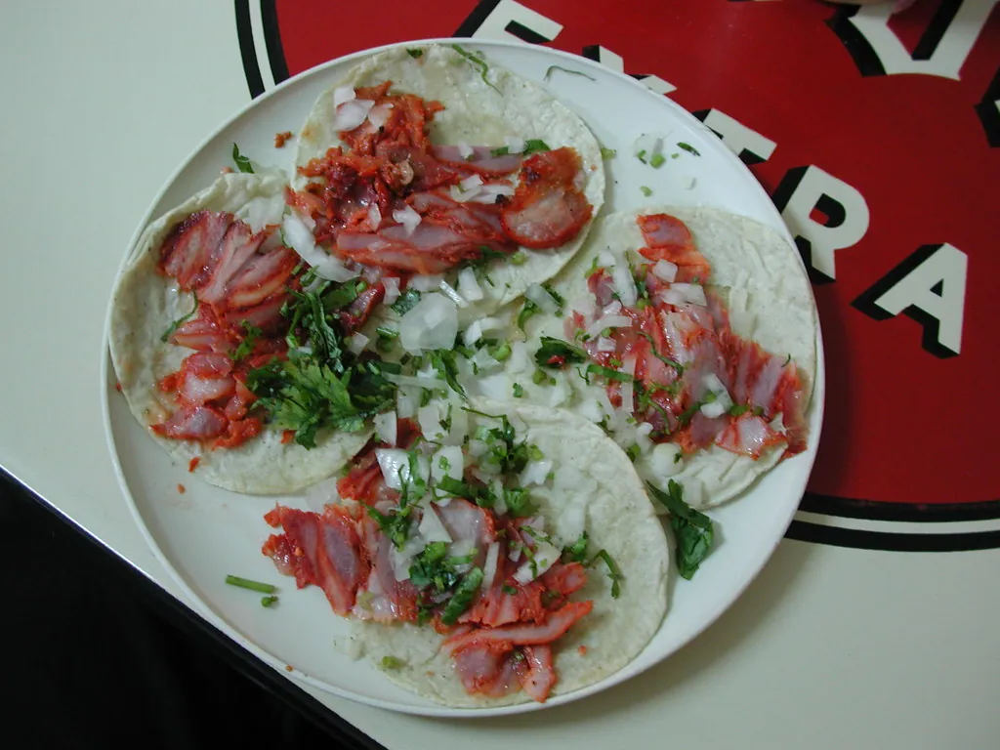
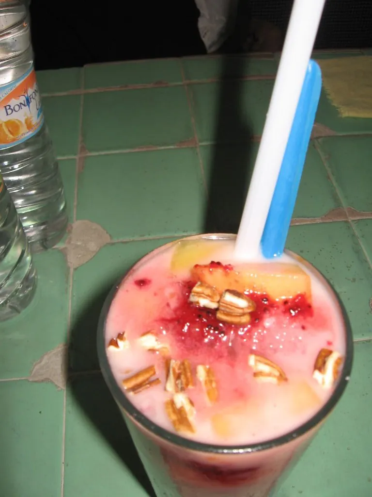
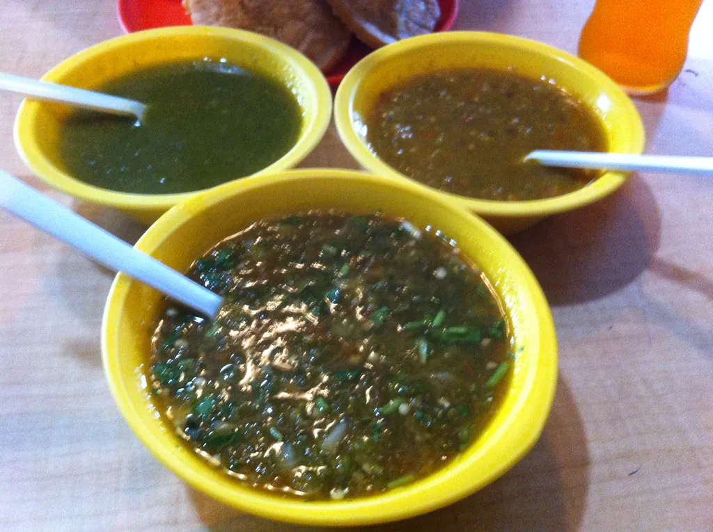
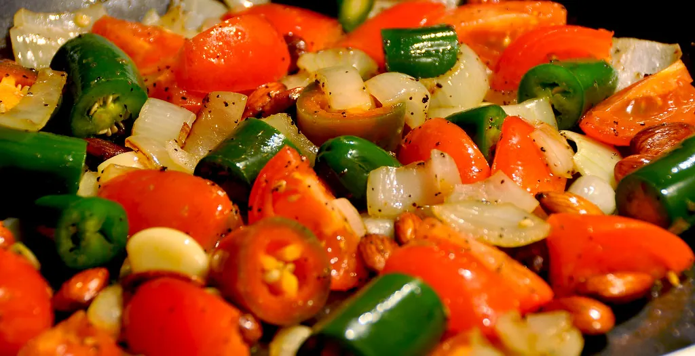

La de la casa
Al pastor
Del trompo directo a la tortilla, con su rebanada de piña.

Abrimos todas las noches menos martes
Pastor marinado 24 horas, tortilla recién salida del comal y cuatro salsas de molcajete. Escríbenos y te lo tenemos listo.

02 — La casa
Empezamos con un puesto de lámina en la esquina. Hoy tenemos seis mesas y la misma receta de adobo: achiote, chile guajillo, naranja y un poco de paciencia.
Nixtamal del día, prensada al momento y directo al comal.
Verde cruda, roja de árbol, macha y una de temporada.
Mándanos tu pedido por WhatsApp y pasas por él sin hacer fila.




03 — Horarios
04 — Ubicación
¿Se te antojó?